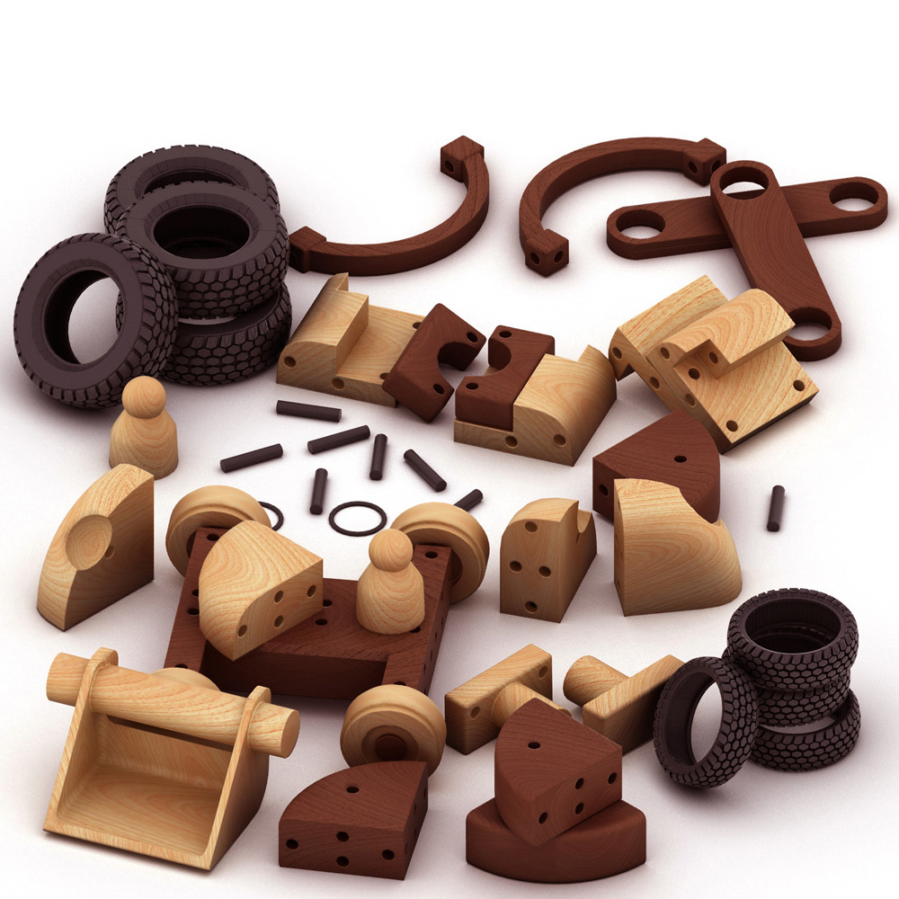
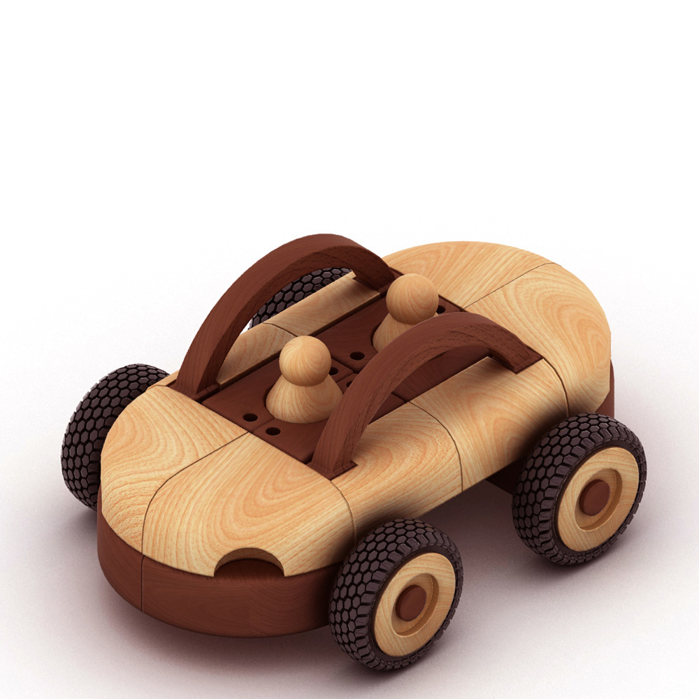
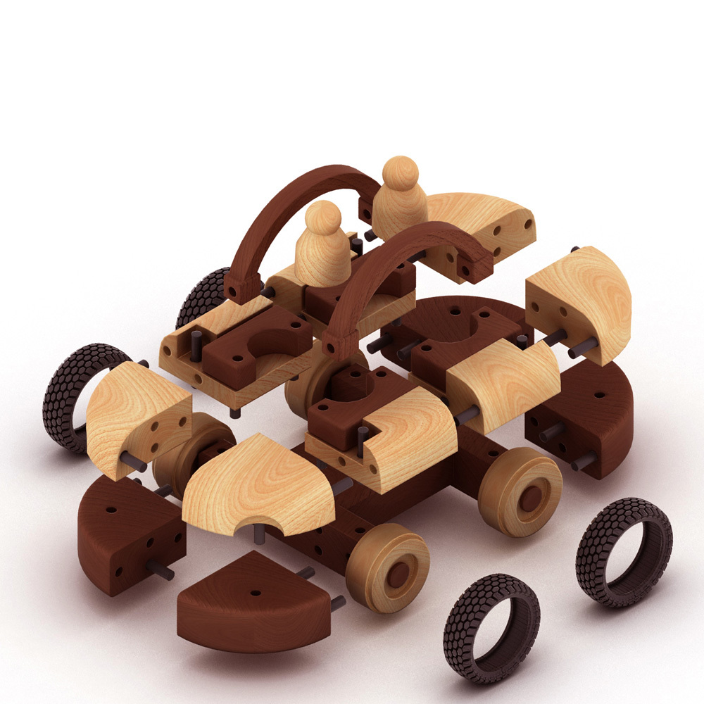
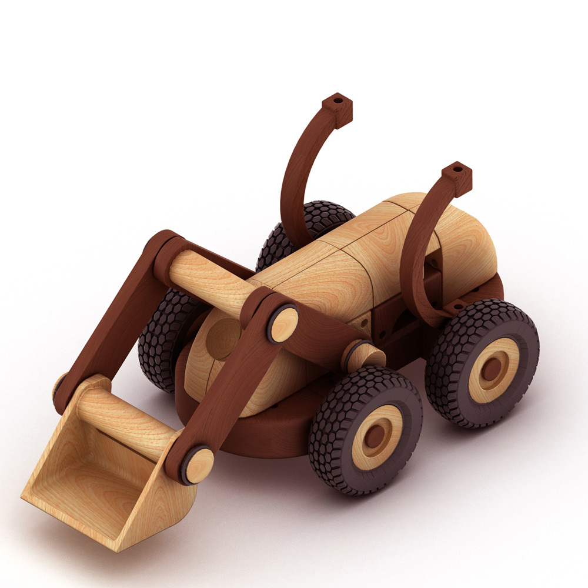
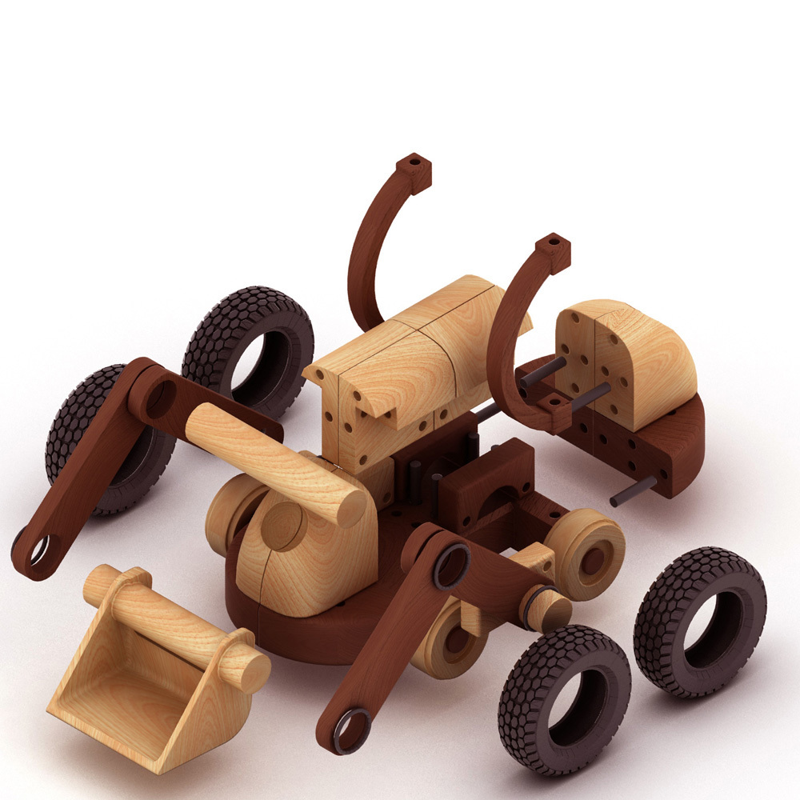
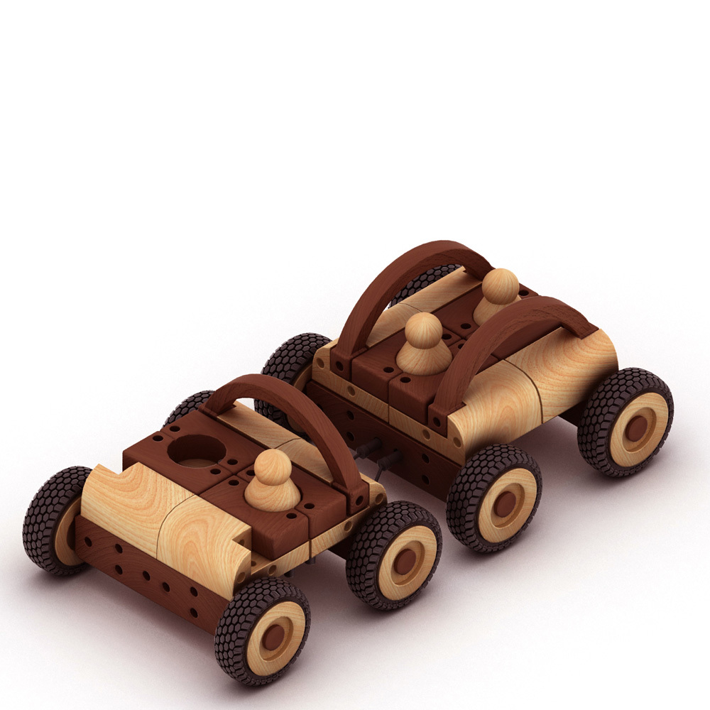
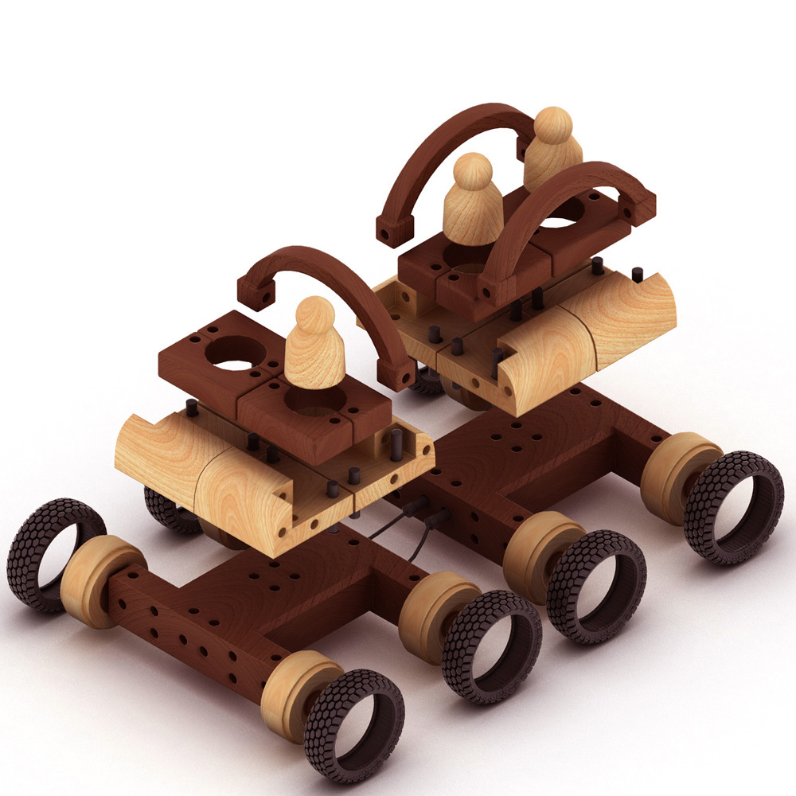
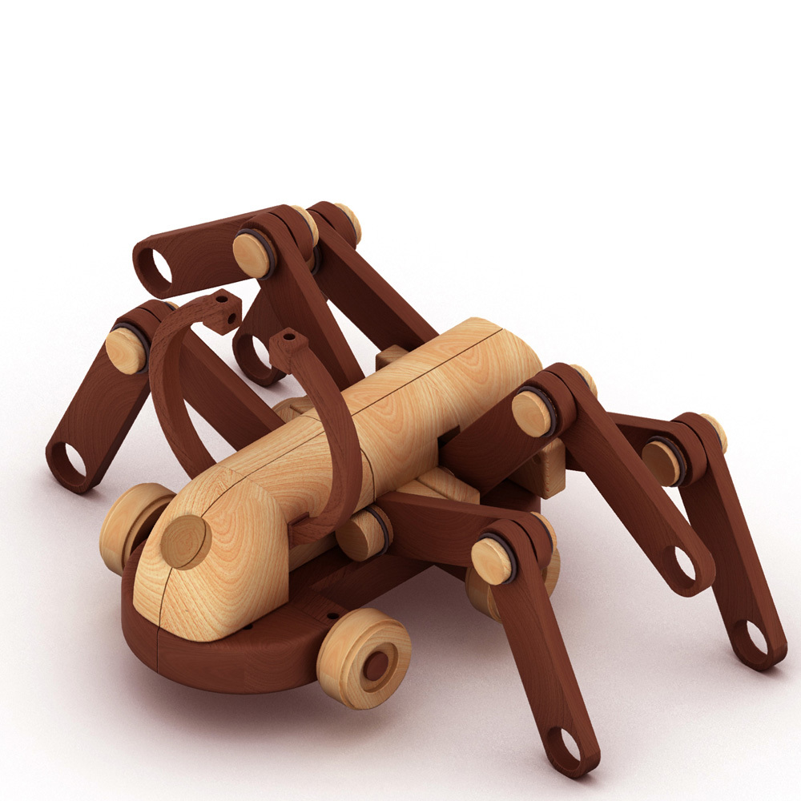
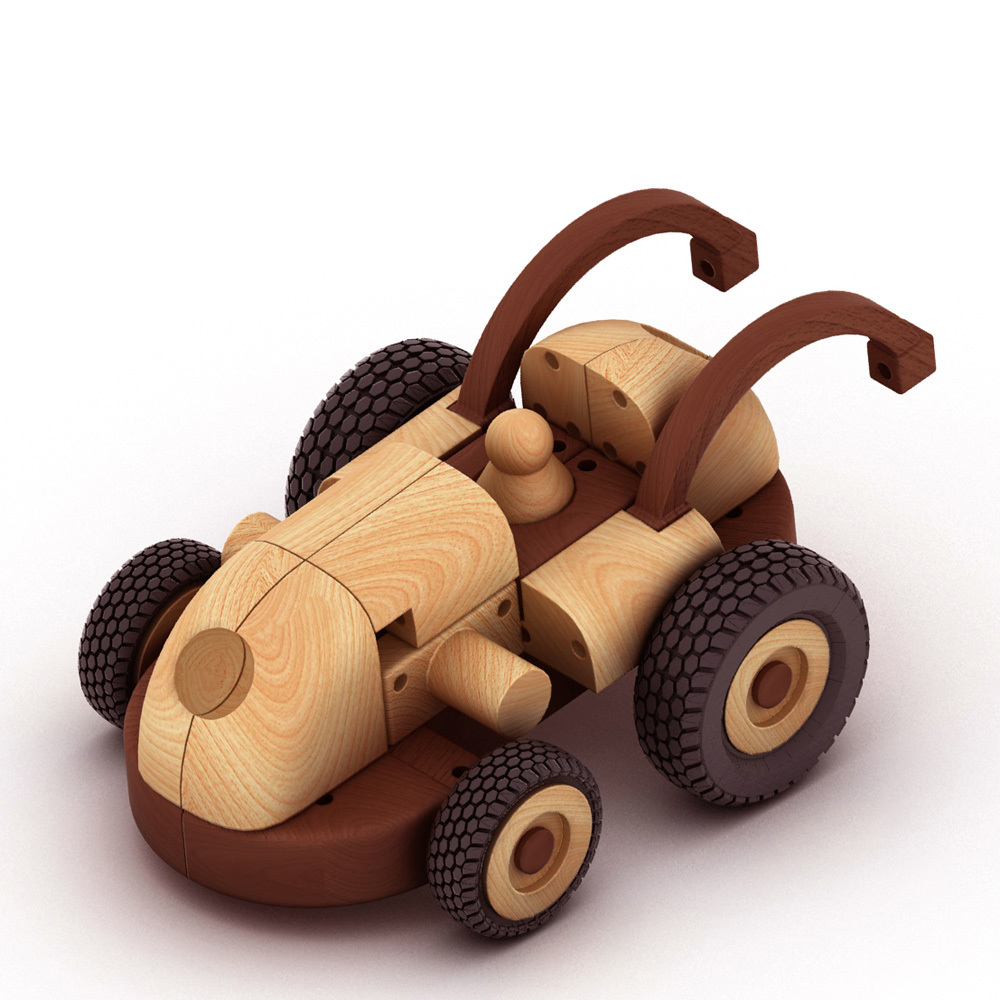

Woodentoy









This is a modular toy designed during my studies. The Wooden Toy competes with plastic toys and should not be old fashioned like some of todays wooden toys are. The different parts are connected through elastic rubber bolts that fit into simple drilled holes. The design of the components is as simple as possible without loosing the fresh look. The topic is transportation because children ever since love loud cars, caterpillars etc. But it is not limited to that.
Es entstand ein modulares Holzspielzeug, das die seit jeher ungebrochene Faszination von Kindern für Fahrzeuge aller Art ausdrückt. Es ist aber nicht darauf beschränkt. Es soll die Konkurrenz mit lieblosem Plastikspielzeug aufnehmen. Im Gegensatz zu vielen aktuellen Entwürfen für Holzspielzeug soll es nicht altmodisch wirken. Die einzelnen Bausteine werden durch Gummibolzen in Bohrungen verbunden und können beliebig kombiniert werden.